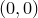
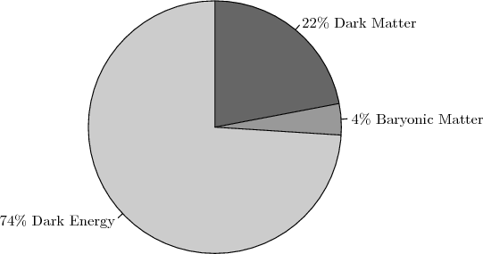

set arrow <arrow number>
from [<system>] <x>, [<system>] <y>
to [<system>] <x>, [<system>] <y>
[ with {<option>} ]
where <system> may take any of the values
( first | second | screen | graph | axis<number> )
The set arrow command is used to add arrows to graphs. The example
set arrow 1 from 0,0 to 1,1
would draw an arrow between the points  and , as measured along the x and y-axes. The tag 1 immediately following the keyword arrow is an identification number and allows arrows to be subsequently removed using the unset arrow command. By default, the coordinates are specified relative to the first horizontal and vertical axes, but they can alternatively be specified any one of several of coordinate systems. The coordinate system to be used is specified as in the example:
set arrow 1 from first 0, second 0 to axis3 1, axis4 1
The name of the coordinate system to be used precedes the position value in that system. The coordinate system first, the default, measures the graph using the x- and y-axes. second uses the x2- and y2-axes. screen and graph both measure in centimetres from the origin of the graph. The syntax axis<n> may also be used, to use the  th horizontal or vertical axis; for example, axis3 above.
th horizontal or vertical axis; for example, axis3 above.
The set arrow command can be followed by the keyword with to specify the style of the arrow. For example, the specifiers nohead, head and twohead, when placed after the keyword with, can be used to make arrows with no arrow heads, normal arrow heads, or two arrow heads. twoway is an alias for twohead. All of the line type modifiers accepted by the plot command can also be used here, as in the example:
set arrow 2 from first 0, second 2.5 to axis3 0,
axis4 2.5 with colour blue nohead